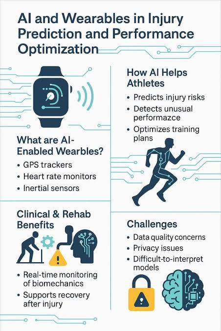
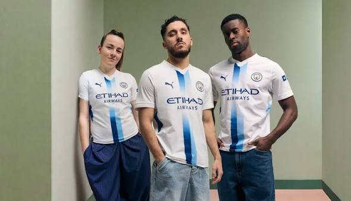

How does VAR work in soccer?
VAR stands for Video Assisted Referee, and is a way to ensure that officiating in soccer is correct in multiple facets of the game. There are two to three referees in a room with screens showing all possible camera angles of an event during a match, and when there is a discrepancy they examine the footage and communicate with the on-field referee. The most common is for offside rulings- the official on the field calls offside when the linesman has his flag up, and the referees in the VAR room look at the play to ensure the correct call was made.
If the referees in the VAR room believe that the call on the field was incorrect, they tell the on-field center referee to stop play and walk over to the screen on the sideline, and look at what the VAR referees see in the replay room. The center referee then decides if "a clear and obvious error" was made, and if so, the call gets reversed. This process happens for things like red cards, cases of mistaken identity and fouls in the box leading to penalties.
How does AI help in tennis?
Answer: The Hawkeye system is used to determine whether balls are in or out. Multiple cameras are used to track the flight path of the ball, and then the computer that all the cameras are connected to determines where the ball landed in relation to the line in question.
"Processes the video in real-time, and tracks the path of the tennis ball on each camera."
The computer combines all the cameras to create an accurate three-dimensional representation of how the ball traveled. When the ball is deemed to be out by the computer, it makes a noise, signifying the call. Players have two challenges of the ruling, but it is highly effective in its decisions and is not often overturned.
When was the first AI/computer used in sports?
Most historians point to Deep Blue, the chess-playing supercomputer built by IBM. In 1997, Deep Blue made history by defeating world chess champion Garry Kasparov.
This victory demonstrated that computers could master complex strategic games and laid the groundwork for modern sports analytics as well as platforms like Chess.com, which feature AI "bots" tuned across various skill levels.
How can AI be used medically in sports?
AI can be used to predict injury, assist surgeons in operations and help students prepare for real-life situations. Some hospitals and medical associations can train AI to “identify and recognize patterns in images”, which can help detect things like fractures, tumors and muscle or ligament tears.

It can even be used for placement of surgical devices and implants, which is very important for sport-related injuries. It can make surgeries more efficient and effective, as the AI can be trained to know the exact process for many kinds of injuries, especially ACL tears, which are common in many sports such as football, basketball and soccer.
What does the future of AI look like in sports?
The future of AI in sports points to three things happening. First: it will be used to enhance coaching. It will help make tactics more creative and “refine decision-making in real time” to help coaches react to situations in games in the most accurate way possible.
Second: it will reshape how teams build rosters. Analytics in sport are growing, and AI will only accelerate this process: the days of Moneyball-style analytics and data are long gone. AI is making it easier for teams to find diamonds in the rough.
Finally, third: it will enhance the fan experience. We can look at Manchester City’s fan-designed third kit for the 2026/27 season, which was made with the help of AI. Sports are "becoming a canvas for immersive, personalized experiences", of which AI is developing new ones every day.

Have a Question?
Fill out the inquiry form below to get in touch with our team